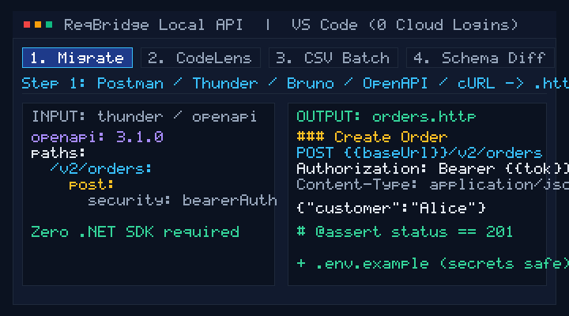

Install Free Core
Install via VS Code Marketplace, GitHub Releases .vsix, or code --install-extension soulkey-tools.reqbridge-local-api.
soulkey-tools.reqbridge-local-api) · 100% Local-First · Optional BYOK
Convert Postman v2.1, Thunder Client, Bruno .bru, OpenAPI 3.0/3.1 (YAML/JSON), cURL, and .http collections into clean VS Code
.http + .env.example + OpenAPI 3.1 specs locally—preserving inherited auth and assertions—then
run data-driven CSV batches and diff staging vs. prod schemas with zero cloud sign-in.
Send Request & multi-file .bru folder import?
Install Free VS Code Extension
fetch() calls directly from your browser.
Cross-origin endpoints without Access-Control-Allow-Origin will be blocked by browser CORS—use a CORS-enabled / localhost target here,
or install the VS Code extension to run via Node fetch with zero CORS restrictions.
Edit CSV rows and Endpoint URL above, then click "Run Live Batch ▶" to execute real browser fetch() requests and export JUnit XML / Markdown.
.http in 4 Steps
Everything in the browser sandbox above ships natively inside VS Code (soulkey-tools.reqbridge-local-api) with an Activity Bar Explorer, 1-click Thunder Client auto-discovery, CodeLens, filesystem .bru folder import, and Node fetch execution.

Install via VS Code Marketplace, GitHub Releases .vsix, or code --install-extension soulkey-tools.reqbridge-local-api.
Run ReqBridge: Import & Convert Collection to transpile Postman v2.1, Thunder Client, Bruno folders, or .http into .http, .env.example, and OpenAPI 3.1.
.httpClick inline CodeLens actions above any request block: Send Request, Diff Staging vs Prod, and Run CSV Batch.
Export standalone zero-lock-in Node CI runners + GitHub Actions YAML, or unlock Pro anytime via ReqBridge: Manage Pro License / Activate Key.
.http → .http & OpenAPI 3.1 migrationpm.test() script translator + offline RB1. / Creem / Gumroad activationReqBridge strips out bloated SaaS workspaces and focuses strictly on the three workflows developers keep hitting paywalls on.
Postman retired its offline Scratch Pad and prices teams at $19/user/mo. Thunder Client v3.0.0 now mandates a free account login and caps free users at 50 requests/collection and 50 runner executions/mo—locking CSV data runs, Git sync, and WSL behind paid seats.
Hand-converting Postman v2.1 JSON, Thunder Client exports, or Bruno .bru directories into plain .http or OpenAPI 3.1 often drops
collection-level Bearer/API-Key inheritance, query parameters, and pm.test() assertions silently.
Deterministic parser + local Node fetch runner + Git-friendly schema diff in one clean extension. Optional BYOK helper only if you
explicitly enable AI translation for complex custom JavaScript pm.test() scripts.
Built to complement Git and plain .http files—not trap your team in another recurring per-seat SaaS.
| Capability | ReqBridge Local API | Postman Team | Thunder Client Pro | Bruno (OSS) | REST Client (.http) |
|---|---|---|---|---|---|
| Pricing Model | $19 Personal / $29 5-Seat (One-time) | $19 / user / month | $3–$16 / user / month | Free OSS (Pro USD 6/user/mo) | Free OSS |
| Works Without Cloud Login | ✓ Zero Login | ✕ Cloud Account Required | ✕ Mandatory Login (v3.0.0) | ✓ Local | ✓ Local |
| Local CSV / JSON Batch Runner | ✓ Unlimited (Pro) + JUnit XML | 25/mo on Free | 50/mo on Free (Paid for CSV) | Paid for some GUI/CI flows | ✕ Single request only |
| Postman / Thunder / .bru ↔ .http / OpenAPI 3.1 | ✓ Lossless + Auth Inheritance | ✕ No .http export | ✕ Proprietary format | OpenAPI export issues reported | ✕ Manual conversion |
| Staging vs. Prod JSON Diff | ✓ Structural + Status + Latency | ✕ Manual comparison | ✕ Not built-in | ✕ Not built-in | ✕ Raw text only |
| Air-Gapped & WSL Support | ✓ Full Local / WSL | ✕ Cloud sync friction | WSL behind paid tier | ✓ Local | ✓ Local |
Because there is no collection backend to maintain, you pay once instead of funding someone else's cloud storage bill.
collection.json, .bru folders, and .env secrets stay strictly on your local disk or WSL workspace.
Local AST transpiler, Node fetch batch runner, and schema diff execute in-process with zero telemetry or cloud storage.
If you opt in to translate complex pm.test() JS logic, requests go straight from your machine using your own SecretStorage API key.
Supports offline Ed25519 RB1. license keys (0 network calls) or Creem / Gumroad activation stored in vscode.SecretStorage.
Start free with the VS Code Free Core tier, or unlock unlimited batch runs, collection-wide diffs, and CI export via Creem (global USD) or Mianbaoduo (Mainland China RMB).
.http / OpenAPI 3.1 converter.http conventions & JUnit CI presetspm.test() script assistant across all 5 seats
Free Core features are available immediately via the VS Code Marketplace and GitHub Releases .vsix.
Hosted MoR payment links (Creem / Mianbaoduo / Gumroad) are activating on the checkout pages—you can reserve your $19 / $29 early-bird rate
or test offline RB1. license key inspection directly on Personal Checkout or
email soulkey529@gmail.com.
Straight answers without marketing fluff.
No. Parsing, conversion, batch execution, and schema diffing execute 100% locally inside your browser or VS Code. Offline RB1. keys verify locally with zero network calls; online keys send only your key and anonymized machine ID.
No. Both the $19 Personal License and $29 Team 5-Seat Pack are one-time purchases with zero auto-renewal. After 12 months, your installed extension keeps working permanently in offline mode.
Yes. Unlike tools that put WSL/Remote behind recurring business tiers, ReqBridge runs cleanly inside local Windows, macOS, Linux, WSL, and Remote-SSH workspaces.
95% of collection conversion, batch running, and JSON schema diffing is deterministic and needs zero AI. For edge cases with heavy custom JavaScript inside pm.test(), plugging in your own OpenAI/Gemini/compatible key avoids SaaS token markups completely.
Each Personal seat activates on up to 3 personal devices (Team 5-Seat supports up to 15 devices). You can switch keys anytime via ReqBridge: Manage Pro License / Activate Key in the Command Palette.
Every purchase includes a 14-day no-questions-asked refund guarantee. Email soulkey529@gmail.com with your order ID and we reply within 3 business days.